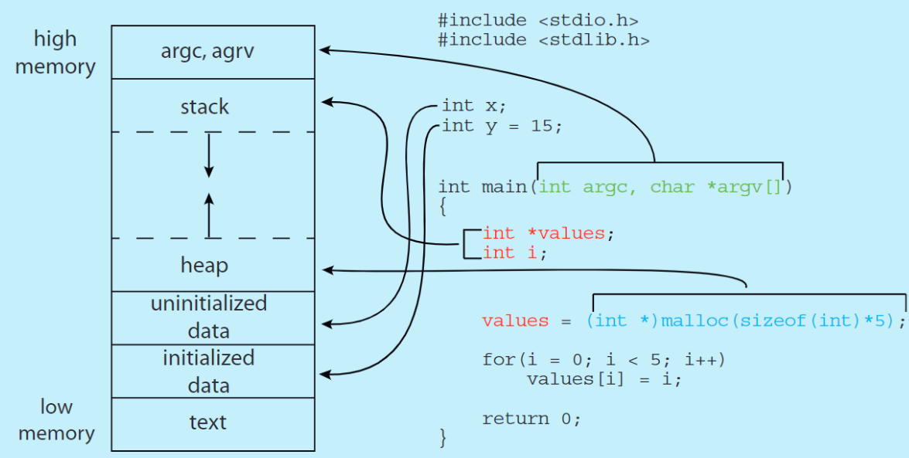

1 Process
Process Concept
一个进程就是一个程序的 运行实例 （A instance in execution of a program）。一个进程的状态，由执行这个进程的 CPU 的 PC 与寄存器值的内容表示。
由于历史原因，进程 process 和 作业 job 这两个概念可以认为是等同的。
一个典型的进程包括（地址位从低到高）：
- Text Section：可执行代码，固定大小
- Data Section：全局变量，静态变量，可变大小
- Heap Section：动态分配的内存（malloc，calloc，new），可变大小，从低到高向上扩张
- Stack Section：用于存储局部变量、函数参数和返回地址（每当调用一个函数时，一个新的栈帧（Stack Frame）就会被推入栈中；当函数返回时，该栈帧就会被弹出），可变大小，从高到低向下扩张。
ELF (Executable and Linkable Format) 的 Memory Layout
在大多数主流架构 （x86-64， RISC-V）架构上，一个程序的进程内存布局（从低地址到高地址）通常遵循以下结构：
| 地址 | 段 | 增长方向 | 内容 |
|---|---|---|---|
| 高地址 | 命令行参数和环境变量 | argv, envp |
|
| 栈 (Stack) | \(\downarrow\) (向低地址) | 局部变量, 函数参数, 返回地址 | |
| 未分配区域 | 堆和栈之间的空闲空间 | ||
| 内存映射段 | 共享库, mmap |
||
| 堆 (Heap) | \(\uparrow\) (向高地址) | 动态分配的内存 | |
| 数据段 (.data, .bss) | 全局和静态变量 | ||
| 只读数据段 (.rodata) | 字符串常量, const变量 | ||
| 低地址 | 代码段 (.text) | 可执行机器码 |
-
代码段 (.text)，对应 Text Section
-
只读数据段 (.rodata) 在实际的x86-64布局中，常量数据被单独放在该段中，以提供额外的保护。
-
数据段 (.data 和 .bss)，对应 Data Section
-
堆 (Heap)，对应 Heap Section
-
内存映射段 (Memory Mapping Segment) 该段通常位于堆和栈之间，用于
mmap()系统调用。文件和库（如共享库 .so 文件）通过内存映射的方式加载到这里，以实现高效的访问。 -
栈 (Stack)，对应 Stack Section
-
命令行参数和环境变量 (Command-line arguments & Environment variables) 位于虚拟地址空间最高处，命令行参数 (
argv) 和环境变量 (envp) 在程序启动时由操作系统传递到这里，以便程序可以访问它们。

进程与程序的区别
Process State
当进程运行的时候，它的状态就会改变。可以将其看作是一个如下图的状态机：
- new：进程被创建
- running：进程正在被执行
- waiting：进程正在等待，或被临时暂止，以等待某个事件
- ready：
- terminated：

xv6 与 Pintos 中有关 Process State 的设计
xv6 使用 UNUSED, USED, SLEEPING, RUNNABLE, RUNNING, ZOMBIE 共六个状态来表示进程状态。其中 USED 对应 new ，而 UNUSED 与 ZOMBIE 两个状态对应 terminated。因为 xv6 维护着一个固定长度的 Process Table，被 terminated 的进程首先被标记为 ZOMBIE，其进程控制块 (PCB) 仍然存在于内存中，只有当其父进程调用 wait() 时，这个僵尸进程才会被彻底清除，它的PCB才会被释放，从而转变为 UNUSED 状态。
而对于 pintos，它只使用 THREAD_RUNNING, THREAD_READY, THREAD_BLOCKED, THREAD_DYING 四个状态。Pintos 使用 Linked List 动态维护进程（一个 ready list,一个 all list）。当一个新线程/进程在创建时，它的结构体 (struct thread) 会被初始化，然后通常会立即被设置为 THREAD_READY 并放入就绪队列。“New” 阶段（例如在磁盘上加载程序）在 Pintos 的线程/进程管理中没有作为一个独立的状态被明确定义。
有关进程的维护在下文会说
Process Control Block
进程在操作系统中是以进程控制块（Process Control Block, PCB or Task Control Block, TCB）的形式表示的。
一般一个 PCB 所包含的内容如下：
- Process State
- Program Counter：指向 下一条要执行的指令
- Contents of CPU Registers
- CPU-scheduling Info
- Memory-management Info：例如 base & limit registers， page tables，segment tables等。（基于当前 OS 使用的memory system）
- Accounting Info：进程消耗了多少 CPU time，花了多少资源等待
- IO Status Info：分配给该进程的 I/O 设备，正在等待的 I/O 设备列表，文件描述符（File Descriptors，通常作为一个指向 文件描述符表（File Descriptor Table） 的指针。这个表记录了该进程打开的所有文件、网络连接或管道，以及它对这些资源的访问权限（读、写等））等
不同的操作系统，对 PCB 的实现也不同。
xv6 对 PCB 的实现
xv6 在 kernel.proc.h 中对 PCB 的具体实现如下：
struct proc {
struct spinlock lock; // 自旋锁，确保进程内部同步，保护 struct proc 结构体中的核心敏感数据，确保在多核 CPU 环境下对进程状态的并发访问是安全的。有关进程同步需要见后续章节（CPU-scheduling Info）
// p->lock must be held when using these:
enum procstate state; // Process state
void *chan; // If non-zero, sleeping on chan（睡眠等待通道。表示进程因等待某个事件或资源而阻塞（SLEEPING 状态）时所等待的对象地址，属于CPU-scheduling Info）
int killed; // If non-zero, have been killed，被标记为已终止的状态（但尚未退出）Process State
int xstate; // Exit status to be returned to parent's wait，IO Status Info
int pid; // Process ID
// wait_lock must be held when using this:
struct proc *parent; // Parent process，IO Status Info
// these are private to the process, so p->lock need not be held.
uint64 kstack; // 内核栈的虚拟地址。进程从用户模式切换到内核模式（例如通过系统调用或中断）时使用的栈。Memory-management Info
uint64 sz; // 进程内存大小。进程用户空间内存（堆和栈）的总大小（以字节计）。Memory-management Info
pagetable_t pagetable; // 指向进程的用户空间页表。这是实现进程独立虚拟地址空间的关键。Memory-management Info
struct trapframe *trapframe; // 指向一个数据页，该数据页用于保存进程从用户模式进入内核模式（通过中断、异常或系统调用）时的 CPU 寄存器状态。（Contents of CPU Registers）Contents of CPU Registers
struct context context; // swtch() here to run process （调度上下文。保存了除栈指针外的通用 CPU 寄存器值，是内核进行 swtch()（进程切换）时使用的核心数据。Contents of CPU Registers）
struct file *ofile[NOFILE]; // Open files（文件描述符表，IO Status Info）
struct inode *cwd; // Current directory（当前工作目录的 inode 结构体指针，IO Status Info）
char name[16]; // Process name (debugging)
};